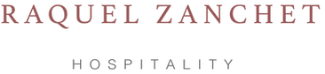
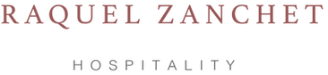

Raquel Zanchet trabalha com uma equipe de profissionais criativos e multidisciplinares, que oferecem suporte em todas as áreas de implantação de projetos. Com uma visão contemporânea, ela desenvolve projetos que causam impacto positivo no meio ambiente e na preservação cultural e arquitetônica, utilizando técnicas de restauro como o Retrofit—que consiste na modernização de estruturas existentes sem descaracterizá-las.
Em seu portfólio, destacam-se:
- Zank Hotel Design em Salvador: Um hotel boutique que integra design moderno com a cultura local, proporcionando uma experiência única aos hóspedes.
- Jardim da Amazônia Lodge: Localizado ao sul da Amazônia, este eco lodge promove o turismo sustentável e a conservação da biodiversidade.
- Bioconstrução: Uma bioconstrução no Cerrado de Mato Grosso, que utiliza materiais naturais e técnicas sustentáveis para minimizar o impacto ambiental.
Conheça mais sobre o trabalho de Raquel Zanchet e descubra como sua visão pode agregar valor ao seu projeto. Entre em contato para futuras colaborações.